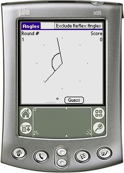

Angles is a simple learning tool. Angles takes you through 10 small quizzes where you have to measure or guess the angle between two lines.
Angles is primarily meant for pupils in the lower grades. Angles was created as a response to the wishlist found at: http://www.mpsomaha.org/willow/technology/wishlist.html.
Angles is released under the GNU General Public License v2 and requires Palm OS 3.0 or better.
You can support this project by donating any amount to my Pay Pal account.
You can get Angles, LcmGcf, MathAce, MixedUp, PowerPlay and Simplify in one Bundle.
v1r4 (2005-06-14) Added the option to include/exclude reflex angles (Tony Vincent). v1r3 (2005-03-28) Added Edit menu. v1r2 (2005-03-27) Added the reset Low Scorers list option. v1r1 (2005-03-23) First release of Angles.